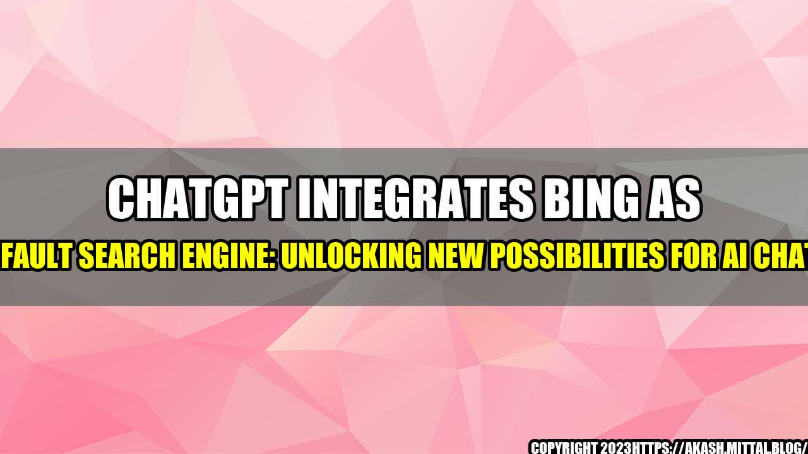

ChatGPT Integrates Bing as Its Default Search Engine: Unlocking New Possibilities for AI Chatbots

Imagine having a personal assistant that knows exactly what you want before you even ask for it. Someone who anticipates your every need and is always there to help you out of any sticky situation. Sounds too good to be true, right? Well, with the advancement of AI chatbots and the integration of Bing as its default search engine, this dream might soon become a reality. The rise of AI chatbots has opened up new possibilities in the world of technology. These bots can handle a variety of tasks such as scheduling appointments, making reservations, and providing customer support. However, one of the biggest advantages of AI chatbots is their ability to search for information quickly and accurately. This is where Bing comes in. Bing is a search engine owned by Microsoft that has been growing in popularity over the past few years. In fact, it currently has a 7.31% market share worldwide, making it the second most popular search engine in the world after Google. Bing's popularity is due to its accuracy and ability to provide relevant results for a variety of searches. Now, Bing has been chosen to be the default search engine for Open AI's ChatGPT. This is a monumental decision that will have a significant impact on the world of AI chatbots. Here are three reasons why the integration of Bing into ChatGPT will be a game-changer: ## 1. Faster and More Accurate Search Results One of the biggest advantages of using Bing as the default search engine for ChatGPT is its speed and accuracy. Chatbots are supposed to be quick and efficient, providing answers to user queries almost instantly. With Bing, ChatGPT will be able to search for information more quickly and accurately than ever before. Imagine being able to ask your chatbot a question and receiving an answer within seconds. With the integration of Bing, this will soon become a reality. Bing's advanced algorithms and machine learning capabilities will enable ChatGPT to provide more accurate answers to user queries, making it an indispensable tool for anyone looking to find information quickly. ## 2. Improved Customer Support Another advantage of using Bing as the default search engine for ChatGPT is its ability to provide better customer support. Chatbots are increasingly being used to provide customer support for a variety of businesses. With the integration of Bing, ChatGPT will be able to provide more accurate answers to customer queries, reducing the need for human intervention. This will result in faster response times and a more seamless customer experience. Customers will be able to get their questions answered quickly and efficiently, without the hassle of long wait times or being transferred to multiple agents. Bing's ability to provide relevant results for a variety of searches will make ChatGPT a valuable asset for any business looking to provide quality customer support. ## 3. Increased Productivity Finally, the integration of Bing into ChatGPT will result in increased productivity for users. Chatbots are designed to automate tasks and provide quick access to information. With the integration of Bing, ChatGPT will be able to perform tasks more quickly and accurately, allowing users to focus on more important tasks. For example, instead of spending hours searching for a particular piece of information, a user could simply ask their chatbot to find it for them. This would free up time for more important tasks, ultimately resulting in increased productivity and efficiency. In conclusion, the integration of Bing as the default search engine for Open AI's ChatGPT is a significant development that will have a major impact on the world of AI chatbots. From faster and more accurate search results to improved customer support and increased productivity, the advantages of using Bing are clear. As AI chatbots continue to evolve and become more advanced, we can expect to see even more innovative uses for this powerful technology in the years to come. Reference URLs:
:format(webp)/cdn.vox-cdn.com/uploads/chorus_image/image/69146233/acastro_210304_1777_bing_live_event_0062.0.jpg)
Curated by Team Akash.Mittal.Blog
Share on Twitter Share on LinkedIn